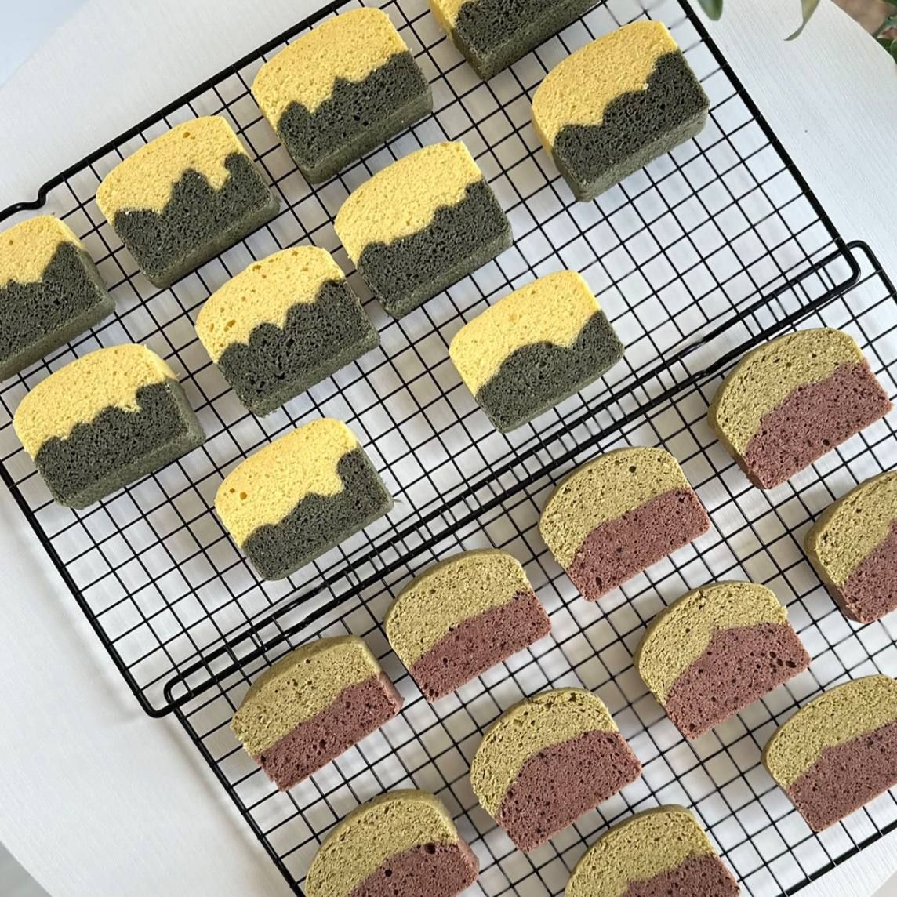

밀가루 없이, 버터 없이, 방부제 없이.
국내산 쌀가루와 계란, 흰강낭콩앙금만으로 찐 카스테라.
한 입 베어물면 촉촉한 속살에서 쑥 향, 단호박 단맛이 번집니다.
건강한 재료인데 이렇게 맛있어도 되나 싶은 — 그런 카스테라입니다.
노랑과 초록의 자연 투톤. 단호박의 달콤함과 쑥의 은은한 향이 한 조각에.
초록과 핑크의 선명한 대비. 쑥의 깊은 향과 비트의 자연 단맛.
진한 코코아의 깊은 맛. 아이들이 특히 좋아하는 인기 메뉴.
그윽한 말차의 풍미. 쌀의 고소함과 말차의 쌉싸름이 만나는 어른 맛.
※ 1세트(10개입)당 2가지 맛 선택 가능
투톤 단면이 예뻐서 선물·답례품으로 인기가 많습니다.
개별 포장되어 나눠주기 편하고, 남녀노소 누구나 좋아합니다.
| 구성 | 가격 |
|---|---|
| 개당 (최소 10개 이상) | ₩2,500 |